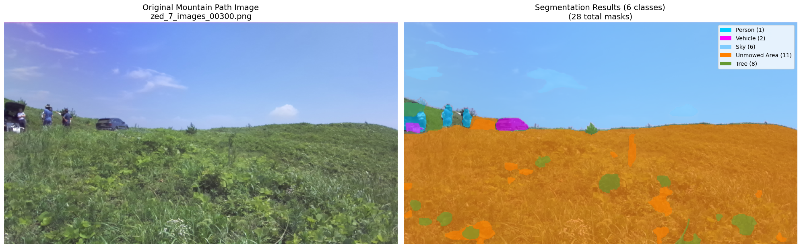
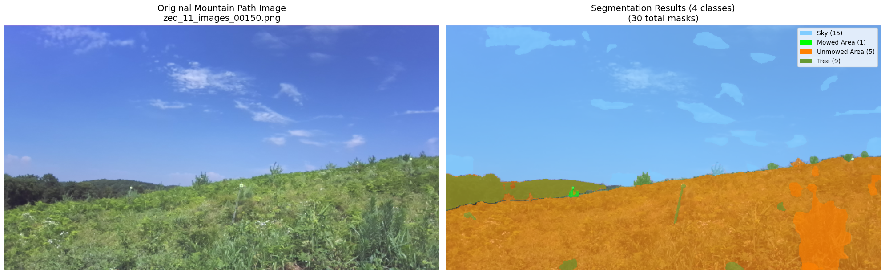
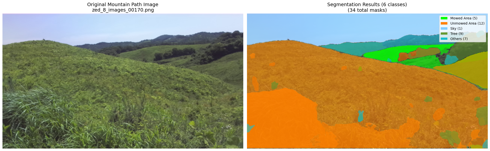

* 산길 원본 vs 오토라벨링 결과 (좌: zed_7_images_00300.png, 우: 6개 클래스 · 28개 마스크). Person / Vehicle / Sky / Mowed Area / Unmowed Area / Tree.
KIRO(한국로봇융합연구원) 산학협력 과제로, 산업 현장의 대규모 이미지 데이터를 사람 개입을 최소화한 오토 라벨링 파이프라인으로 처리해 인건비·시간을 절감하는 것이 과제 목표였다. 인하대 팀이 AGI + LLM 연계 알고리즘을, KIRO가 현장 데이터 수집·검증을 맡는 구성.
첫 적용 도메인은 자율 예초 로봇이 다루는 산길·초지 이미지로, 특히 예초 완료 영역(Mowed) / 미예초 영역(Unmowed) 구분이 요구되었다. 그러나 이 클래스 체계로 사전 라벨된 공개 데이터셋이 없고, 산길은 풀·초지 경계가 연속적이라 수동 폴리곤 라벨링의 라벨러 편차와 시간 비용이 매우 컸다. 학습 없이 곧바로 라벨 후보를 뽑아낼 수 있는 제로-트레이닝 파이프라인이 필요했다.
SamAutomaticMaskGenerator를 두 설정으로 실행: (a) 세밀 points_per_side=32, pred_iou=0.85, stability=0.92, min_area=300, (b) 큰영역 points_per_side=16, pred_iou=0.7, stability=0.85, min_area=2000. 두 결과를 합친 뒤 IoU ≥ 0.7 기준 중복 제거 (큰 마스크 우선).이 산길 이미지에서 간단한 segmentation을 수행하려고 합니다. 다음과 같이 segmentation 해야 할 클래스들을 뽑아주세요: - 길/도로 관련 (예: Road, Path, Trail) - 사람이나 동물 (예: Person, Animal) - 차량 (예: Vehicle) - 예초 관련 식물 영역 (Mowed / Unmowed Area) - 기타 배경 (Sky, Rock, Tree, Building) - 애매한 객체는 others로 분류. 너무 세세하게 구분할 필요는 없고, 예초/비예초 영역 구분이 목적임을 기억해주세요. 이 이미지에 실제로 나타나는 주요 객체들만 포함해주세요.
* 사전 라벨 세트에 종속되지 않도록 이미지별 동적 클래스 추출 + 과제 목적을 프롬프트에 명시.
1단계: LLM으로 클래스 확인 중...
→ [Road, Mowed Area, Unmowed Area,
Sky, Tree, Others]
2단계: SAM으로 마스크 생성 중...
총 100개 → 71개 (IoU ≥ 0.7 dedup)
3단계: 전체 71개 마스크 분류 중...
Mowed Area: 5 → 5개
Unmowed Area: 18 → 12개
Tree: 12 → 9개
Others: 9 → 7개 (DBSCAN 병합 후)
4단계: 결과 시각화 완료
* SAM 원본 100 → 71(dedup) → 분류 → DBSCAN 병합 후 Mowed 5 · Unmowed 12 · Tree 9 · Others 7 마스크.
학습 없이도 산길 이미지에서 예초 완료 영역(Mowed) / 미예초 영역(Unmowed)을 포함한 6개 안팎의 클래스에 대해 픽셀 단위 오토라벨을 생성하는 파이프라인을 완성하였다. 동적 클래스 추출 → SAM dual-config → per-mask LLM 분류 → DBSCAN 병합으로 이어지는 4단계 구조 덕에, 라벨 스키마를 새로 정의하지 않고도 이미지 특성에 맞춰 6~15개 마스크 규모의 세그멘테이션 결과를 곧바로 얻을 수 있었다.


* 정성 결과 — 좌: 4클래스 · 30 마스크 (하늘/나무 + 예초/비예초), 우: 6클래스 · 34 마스크 (예초·비예초 능선이 넓게 유지됨).
SamAutomaticMaskGenerator dual-configforest_image/zed_*.png)